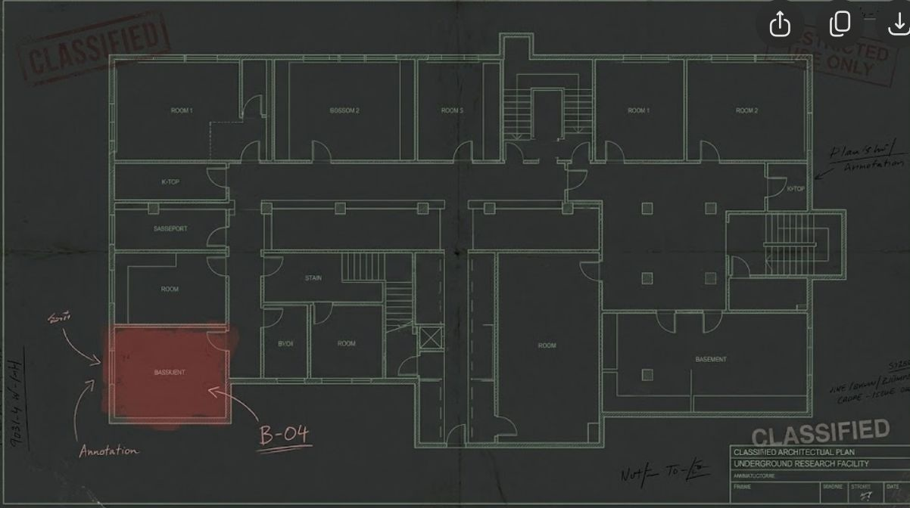

RECOVERED DEVICE // INCIDENT 017
THE LAST
LOGIN.
Forty-seven days ago, researcher Mara Vale disappeared. Her laptop was recovered with its hard drive partially erased.
THE OFFICIAL REPORT CLAIMS SHE LEFT VOLUNTARILY.
RECOVERED DEVICE // INCIDENT 017
Forty-seven days ago, researcher Mara Vale disappeared. Her laptop was recovered with its hard drive partially erased.
THE OFFICIAL REPORT CLAIMS SHE LEFT VOLUNTARILY.
SOME RECORDS WERE ERASED. OTHERS WERE LEFT FOR YOU.
Research Division
Missing for 47 days
Last recorded access: 02:17
A recovered image has exposed a missing system event. Decrypting archive…
The record is incomplete. Inspect the security stills, then return to see what changes.
Door B-04 opened using a security override from INSIDE the facility. The official report claimed Mara exited through the front gate.
Open each image to examine the recovered metadata. Look carefully at the door label.
| CAMERA | 04 / LOWER LEVEL |
| TIME | 02:17:43 |
| DOOR ID | B04 (without hyphen) |
| ANOMALY | Door opened from inside; no exit recorded. |
Figure out the bird and combine it with the door identifier to make the key.

Room B-04 connects to a maintenance tunnel. This route was excluded from the official floor plan.
CAM_04: Door B04, 02:17:43.
Inspect the basement security image.
The key combines a door ID and a black-feathered bird.
Read and save the deleted conversation.
The door opened from inside, contradicting the report.
Return to the access log after finding the door.
A concealed maintenance tunnel leads out of B-04.
Inspect the facility blueprint (optional, but changes an ending).
{endingNames}
Required: security image, message thread, and recovered access event.
Combine the door ID with the bird mentioned in the messages. Example format: A01SPARROW.
The final recording is available.
"They falsified the reports. I have proof. I'm heading for the basement, but the cameras are already down. If you find this, don't assume I'm dead."
[TRANSMISSION INTERRUPTED]
The recording leaves one decision. Will you expose the documents, or protect Mara's location?
{story}
ENDING {count} OF 3 DISCOVERED